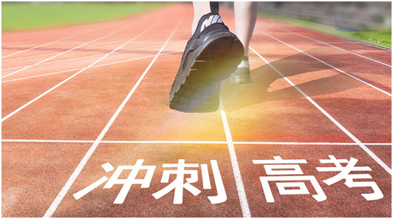
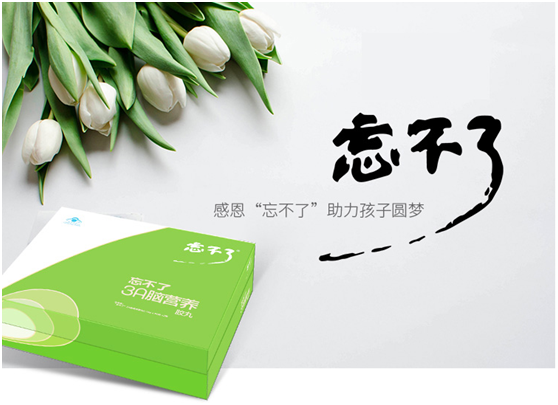
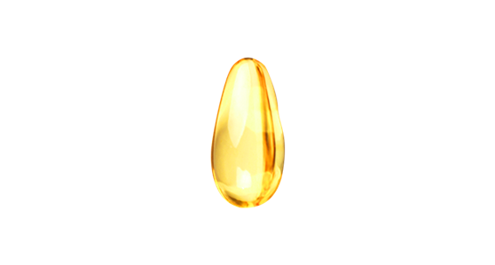
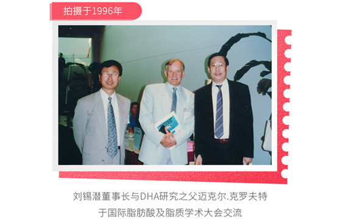
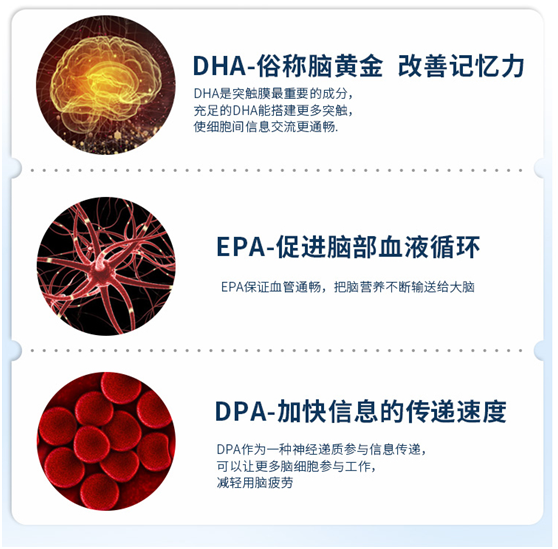
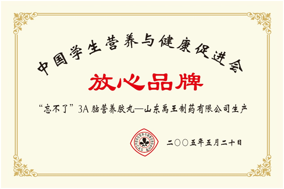
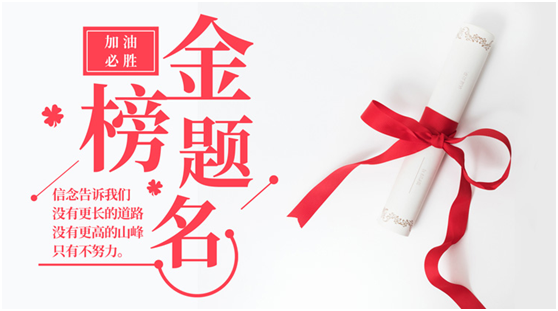

3个月提升76分，考入清华大学，他是怎样做到的
高考就是千军万马过独木桥
一分之差，就能淘汰上万人
对于出身普通，没有家庭背景的高考学子来说，
高考是唯一的出路，
考上重点大学，学习环境、
师资力量、教学水平都有较高的档次，
无不影响着我们未来的发展。
我叫曹翔宇，来自河北正定中学
今年以696分的成绩考入了我梦想的清华大学，这其中的艰辛，只有经历过高考的人才会懂得。今年高 考，我取得了优异的成绩，进入省前三十名，考入了梦寐以求的清华大学。在这成功和辉煌的背后，不仅有恩师的谆谆教导 和同学的风雨陪伴，有自己的点滴奋斗和日夜付出，也有 “忘不了”这一身影的默默贡献。
“忘不了”，为黑暗中的我带来光明
我开始服用“忘不了”的时候，是在高三。经历了一轮复习和二轮复习的我，逐步感觉精力渐渐透支，上课开始出现走神打瞌睡的情况，看书背资料的效率十分低下，考试的成绩也开始出现下滑。 就在我面对这些情况一筹莫展的时刻，“忘不了”这个救星出现了。
开始服用“忘不了”后不久，我便发现了令我欣喜的种种改变。首先， 我的睡眠质量大有提高，白天课堂上不再呵欠连天。其次，我背诵记忆各种知识点时如鱼得水，再也没有发生过背好多遍依然背不过的情况。 吃了一段时间后，我可以说是“满血复活”，之前的一切疲劳症状全部消失，而且感觉头脑更清晰了、精力更充沛了。在高中最后几次练习中，“忘不了”在其中发挥了不可忽视的作用。使我的 成绩一直稳步前进。
感恩“忘不了”助力孩子圆梦曹汉杰 （曹翔宇爸爸）
今年高考，孩子取得了优异的成绩， 圆了他的清华梦。这要感谢老师们的辛勤培育和孩子自身的不懈努力， 更要感恩“忘不了”的功劳， 是“忘不了”使孩子精力充沛，学习效率提高！
进入高三，无论哪个学校的学生都会面临魔鬼式的训练。孩子曾经力不从心，感到特别疲劳，上课还老是打瞌睡。 在高三下学期的一天，偶遇一上届家长。听从他的劝告，我抱着试试看的心理，给孩子买了“忘不了”。服用“忘不了”后不久，孩子欣喜地打来电话说， 他的 睡眠质量提高了，白天在课堂上不再呵欠连天，背诵记忆各种知识点也特别快了。吃了一段时间后，孩子之前的一切疲劳症状全部消失，而且感觉头脑更清晰， 精力更充沛了。在高中最后几次练习中，孩子有了更加优异的发挥，也更加的自信。高考中孩子能考出好的成绩，“忘不了”在其中发挥了非常重要的作用。
一粒神奇的胶丸
忘不了3A脑营养
诞生于美国哈佛实验室
美国国际天然药物公司NPI专有配方
独含3A：DHA、EPA、DPA
原料取自全球最佳天然深海鱼生产基地——秘鲁
 使记忆商数由108.3±10.82提高到131.92±8.90
对学生记忆、思维有明显促进作用
中国学生营养与健康促进会连续21年向全国学生推荐
英国BRC免检产品
诞生25年，服务超过8000万学生
史若松 清华大学
毕业于河北正定中学
课堂上不再
恹恹欲睡
王鸿儒 天津大学
毕业于河北正定中学
学习不再
是门苦差事
马玉蕊 北京理工大学
毕业于河北正定中学
中游的成绩
上升到了上游
雷梓豪 西北工业大学
毕业于河北正定中学
上课时注意力
更加集中了
李佩泽 中南大学
毕业于石家庄实验中学
反应更快
学习更顺畅
史小田 东北大学
毕业于石家庄实验中学
老师同学都夸我
像变了个人
靳培基 吉林大学
毕业于石家庄实验中学
精神百倍
动力十足
张佳成 哈尔滨工程大学
毕业于石家庄第二实验中学
头脑变灵活了
信心又回来了
邢云昊 河北医科大学
毕业于石家庄市第十七中学
“忘不了”真是
我的备考神器
周贺义 兰州大学
毕业于石家庄市第十七中学
小绿瓶成了
我强大的后盾
王小敏 天津大学
毕业于石家庄市第四十二中学
“忘不了”换来了个
美好的前途
杜玉伟 河北工业大学
毕业于鹿泉一中
让我摆脱困境
取得好成绩
解添 北京印刷学院
毕业于鹿泉一中
背单词和文言文
又快又好
王钰 武汉理工大学
毕业于藳城一中
从抵触
到感谢“忘不了”
何永德 河海大学
毕业于藳城一中
感觉头脑
变得清晰明了
王皓洋 河北工业
毕业于栾城中学
我和班里好多同学
都用“忘不了”
迎战高考
谁与争锋
决战之巅
我必成功
扫描二维码
或添加微信号